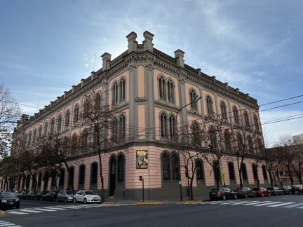

Bienvenidos a nuestra pagina
Somos Catalina Fuentes y Micaela Giso, somos alumnas del colegio Calasanz. Nos conocimos en preescolar, pero recien en 1er año nos hicimos amigas y nos dimos cuenta que teniamos gustos bastante similares. Ambas jugamos al handball en el colegio, Mica de pivote y Cata de armadora. A las dos nos gustan mucho las series y las peliculas, tanto que nos podriamos terminar una temporada de una serie en un dia. Tambien ambas eschuchamos a la cantante Freya Skye y muchas canciones de Disney.
